HW 5.6.6
Contents
Initial-boundary-value Problem
- 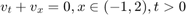
- 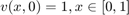
- 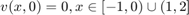
- 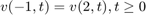
- One Analytic Solution: 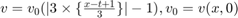
ts = [0.0, 0.5, 1.0];
dx = 0.05; dt = 0.01;
Numerical Solution #1: Lax-Friedrichs Difference Scheme
[u, v, X, T] = solver_5_6_6_A(dx, dt, 1);
plotSlice_5_6_1(ts, dt, u, v, X, T);
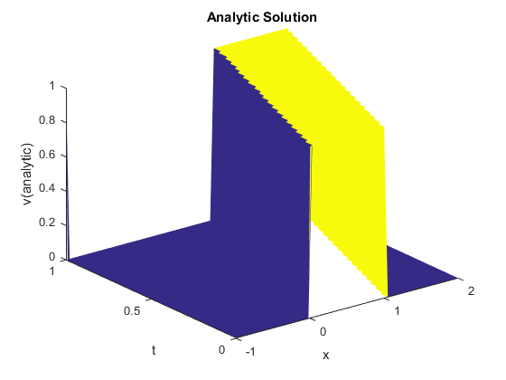 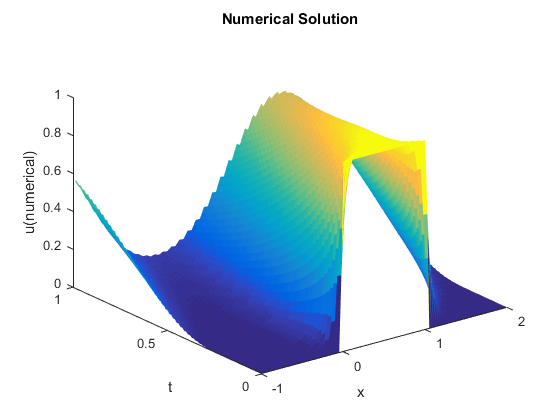 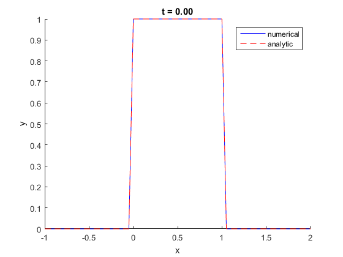 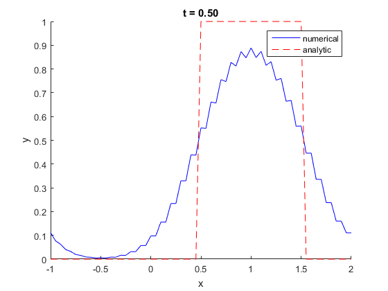 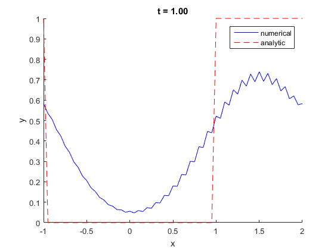
Numerical Solution #2: Beam-Warming Difference Scheme
[u, v, X, T] = solver_5_6_6_B(dx, dt, 1);
plotSlice_5_6_1(ts, dt, u, v, X, T);
ts = [0.0, 0.5, 1.0];
dx = 0.005; dt = 0.001;
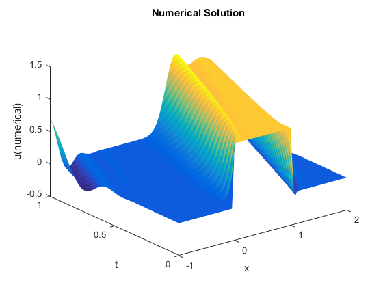 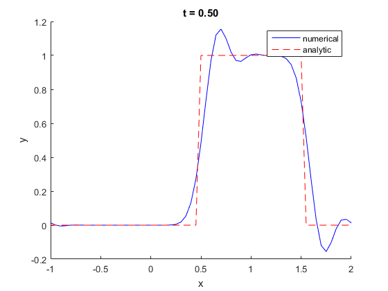 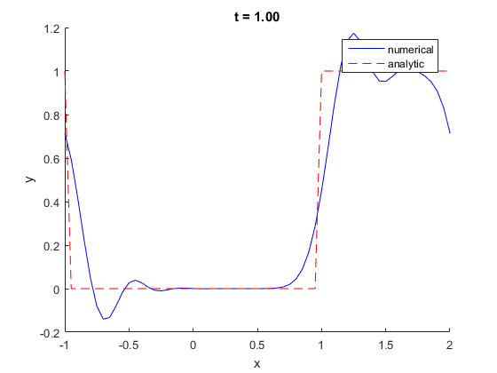
Numerical Solution #1: Lax-Friedrichs Difference Scheme
[u, v, X, T] = solver_5_6_6_A(dx, dt, 1);
plotSlice_5_6_1(ts, dt, u, v, X, T);
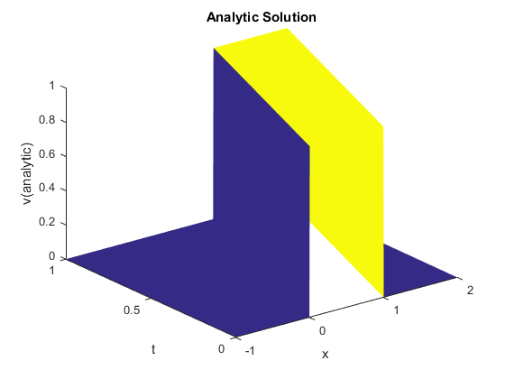 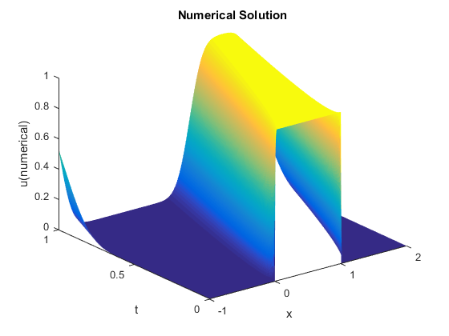 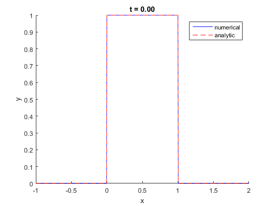 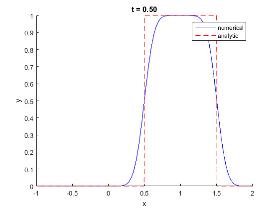 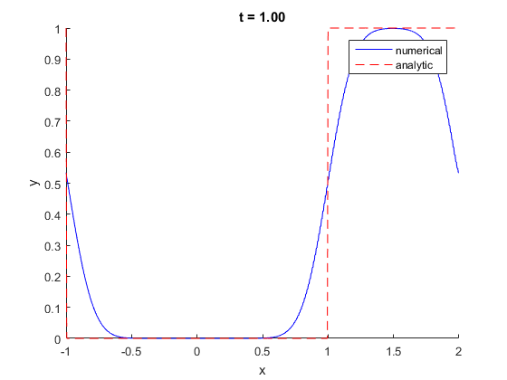
Numerical Solution #2: Beam-Warming Difference Scheme
[u, v, X, T] = solver_5_6_6_B(dx, dt, 1);
plotSlice_5_6_1(ts, dt, u, v, X, T);
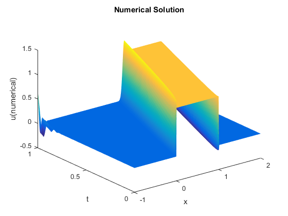 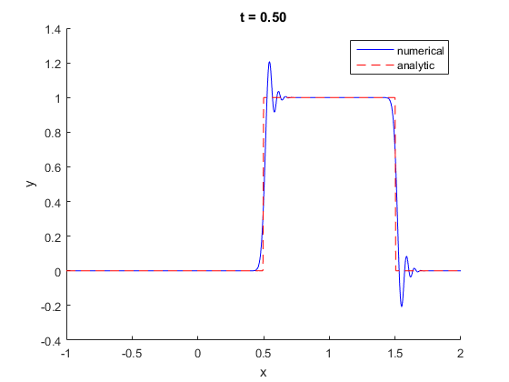 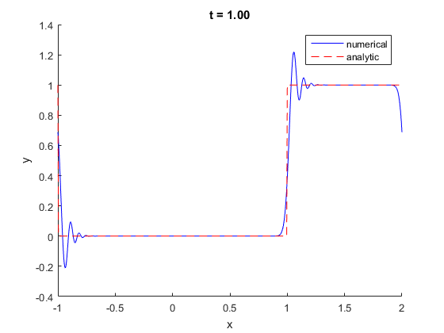
Code: Lax-Friedrichs Difference Scheme
function [u, v, X_, T_] = solver_5_6_6_A( dx, dt, t )
f_ = @(x) ((x >= 0) & (x <= 1));
g_ = @(x) abs(rem(x + 1, 3)) - 1;
v_ = @(X, T) f_(g_(X - T)) * 1;
nu = 1;
X = round(1 / dx);
T = round(1 / dt);
x = 1; Mx = x * X; N = t * T; rx = nu * dt / dx;
x_ = -1 : dx : 2;
t_ = 0 : dt : t;
[X_, T_] = meshgrid(x_, t_);
u = zeros(size(X_));
v = v_(X_, T_);
u(1, :) = f_(x_);
u_t = zeros(size(x_')); D_d = (1 + rx) / 2 * ones(1, length(x_) - 1);
D_u = (1 - rx) / 2 * ones(1, length(x_) - 1);
A = sparse(diag(D_d, -1)) + sparse(diag(D_u, 1));
A(1, end) = (1 + rx) / 2; A(end, 1) = (1 - rx) / 2; for kk = 1 : N
u_t = (A * u(kk, :)')';
u_t(1) = u_t(end);
u(kk + 1, :) = u_t;
end
endCode: Beam-Warming Difference Scheme
function [u, v, X_, T_] = solver_5_6_6_B( dx, dt, t )
f_ = @(x) ((x >= 0) & (x <= 1));
g_ = @(x) abs(rem(x + 1, 3)) - 1;
v_ = @(X, T) f_(g_(X - T)) * 1;
nu = 1;
X = round(1 / dx);
T = round(1 / dt);
x = 1; Mx = x * X; N = t * T; rx = nu * dt / dx;
x_ = -1 : dx : 2;
t_ = 0 : dt : t;
[X_, T_] = meshgrid(x_, t_);
u = zeros(size(X_));
v = v_(X_, T_);
u(1, :) = f_(x_);
u_t = zeros(size(x_')); D_0 = speye(length(x_));
D_1 = rx * ones(1, length(x_) - 1);
D_2 = rx * ones(1, length(x_) - 2); A = (1 - rx) * D_0 + sparse(diag(D_1, -1));
A(1, end) = rx;
B = (1 - rx) * D_0 + 2 * sparse(diag(D_1, -1)) - sparse(diag(D_2, -2));
B(1, end) = 2 * rx; B(1, end - 1) = -rx; B(2, end) = -rx; C = 0.5 * (A * A + B);
for kk = 1 : N
u_t = (C * u(kk, :)')';
u_t(1) = u_t(end);
u(kk + 1, :) = u_t;
end
end